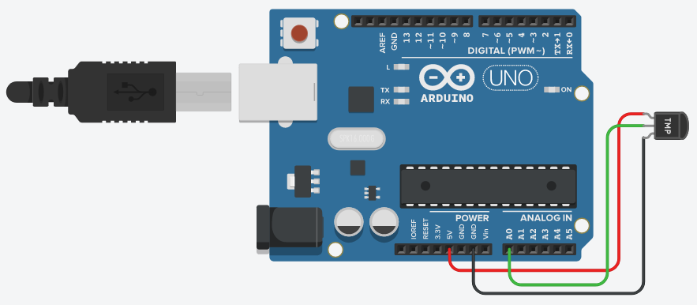

The Temperature Sensor LM35 series are precision integrated-circuit temperature devices with an output voltage linearly proportional to the Centigrade temperature.
The LM35 device has an advantage over linear temperature sensors calibrated in Kelvin, as the user is not required to subtract a large constant voltage from the output to obtain convenient Centigrade scaling. The LM35 device does not require any external calibration or trimming to provide typical accuracies of ±¼°C at room temperature and ±¾°C over a full −55°C to 150°C temperature range. LM35 device
Technical Specifications¶
- Calibrated directly in Celsius (Centigrade)
- Linear + 10-mV/°C scale factor
- 0.5°C ensured accuracy (at 25°C)
- Rated for full −55°C to 150°C range
- Suitable for remote applications
Components Required¶
You will need the following components −
- 1 × Breadboard
- 1 × Arduino Uno R3
- 1 × LM35 sensor
Procedure¶
Follow the circuit diagram and hook up the components on the breadboard as shown in the image given below.

Arduino Code¶
float temp;
int tempPin = 0;
void setup() {
Serial.begin(9600);
}
void loop() {
temp = analogRead(tempPin);
// read analog volt from sensor and save to variable temp
temp = temp * 0.48828125;
// convert the analog volt to its temperature equivalent
Serial.print("TEMPERATURE = ");
Serial.print(temp); // display temperature value
Serial.print("*C");
Serial.println();
delay(1000); // update sensor reading each one second
}
Code to Note¶
LM35 sensor has three terminals - Vs, Vout and GND. We will connect the sensor as follows −
- Connect the +Vs to +5v on your Arduino board.
- Connect Vout to Analog0 or A0 on Arduino board.
- Connect GND with GND on Arduino.
The Analog to Digital Converter (ADC) converts analog values into a digital approximation based on the formula ADC Value = sample * 1024 / reference voltage (+5v). So with a +5 volt reference, the digital approximation will be equal to input voltage * 205.
Result¶
You will see the temperature display on the serial port monitor which is updated every second.